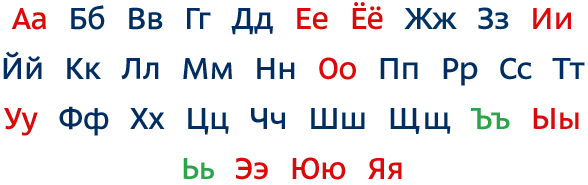
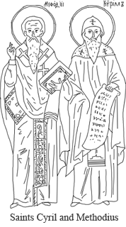

rt.com
rt.com- RT versions:
- روسيا اليوم
- Noticias
- Инотв
- RTД


Russian Alphabet
The History of the Cyrillic Alphabet
The Cyrillic alphabet owes its name to the 9th century Byzantine missionary St. Cyril, who, along with his brother, Methodius, created the first Slavic alphabet—the Glagolitic—in order to translate Greek religious text to Slavic. It is on the basis of this alphabet that the Cyrillic alphabet was developed in the First Bulgarian Empire during the 10th century AD by the followers of the brothers, who were beatified as saints.
Based on the Greek ceremonial script, the original Cyrillic alphabet included the 24 letters of the Greek alphabet and 19 letters for sounds specific to the Slavic language.
The Cyrillic alphabet has gone through many reforms in both Russia and other countries. In Russia, the first reformer of the Cyrillic was printer and publisher Ivan Fyodorov. He eliminated the letters Е and С and many forms of the letter О.
Most reforms saw the number of letters decrease and the simplicity of their inscription increase. But the reverse has also happened: at the end of 18th century the Russian writer and historian Nikolay Karamzin suggested to introduce the letter Ё. Letters Э and Й were officially added to the alphabet in 18th century.
The Cyrillic alphabet achieved its current form in 1708 during the reign of Peter the Great. He introduced lower case characters (before all letters were written with capital letters) and mandated the use of westernized letter forms, making the modern Cyrillic similar to the modern Latin font.
The very existence of the Cyrillic alphabet in Russia was once under threat. In 1919 there was an idea to replace it with the Latin one and bring it into harmony with the alphabet used in Western countries. That could have made the process of learning Russian much easier for some, but this was not to be and we can still enjoy the masterpieces of Russian literature in their original script.
Today Cyrillic is the third official script of the European Union, following the Latin and Greek scripts. It is used in over 50 different languages, especially those of Slavic origin, mainly in Russia, Central Asia, and Eastern Europe.
In Russia the Old Slavic language, which uses the Cyrillic alphabet has been historically used for religious services, and is sometimes used for these purposes today. The modern Russian alphabet differs from its forefather dramatically, and only experts will be able to tell how the letters of the original Cyrillic alphabet looked like and read were texts using it.
Learn more:
Practice reading Russian Alphabet
Learn how to read words, written in Cyrillic
Do you know Cyrillic already? Start learning Russian with our lessons!


- Legal disclaimer
- Feedback
- Contact us
- What it is all about
- Words in pictures
- © Autonomous Nonprofit Organization "TV-Novosti", 2005 – 2020. All rights reserved.